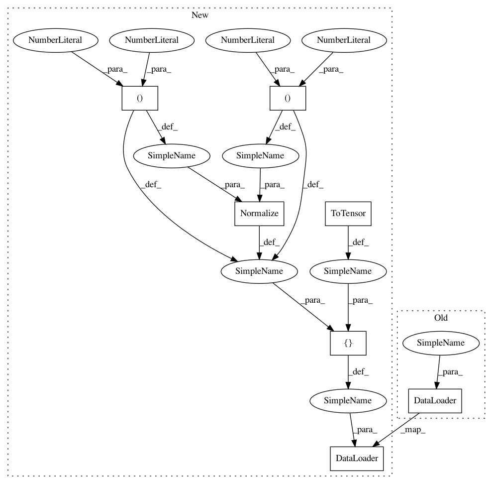

7c83acdf42df2a9bf4d4cfaf4af7d8e848d9f78f,examples/classification.py,InputLoader,__init__,#InputLoader#,28
Before Change
if args.dataset == "cifar10":
dataset = datasets.CIFAR10
train_loader = torch.utils.data.DataLoader(
dataset(dataset_folder, train=True, download=True,
transform=transforms.Compose([
transforms.ToTensor()
])),
batch_size=args.batch_size, shuffle=True, **kwargs)
test_loader = torch.utils.data.DataLoader(
dataset(dataset_folder, train=False, transform=transforms.Compose([
transforms.ToTensor()
After Change
//transforms.Normalize((0.4914, 0.4822, 0.4465), (0.2023, 0.1994, 0.2010))
])
if args.augment:
transform_train = transforms.Compose([
transforms.RandomCrop(32, padding=4),
transforms.RandomHorizontalFlip(),
transforms.ToTensor(),
transforms.Normalize((0.4914, 0.4822, 0.4465), (0.2023, 0.1994, 0.2010))
])
transform_test = transforms.Compose([
transforms.ToTensor(),
transforms.Normalize((0.4914, 0.4822, 0.4465), (0.2023, 0.1994, 0.2010))
])
train_loader = torch.utils.data.DataLoader(
dataset(dataset_folder, train=True, download=True,
transform=transform_train),
batch_size=args.batch_size, shuffle=True, **kwargs)
test_loader = torch.utils.data.DataLoader(
dataset(dataset_folder, train=False, transform=transform_test),
batch_size=args.batch_size, shuffle=False, **kwargs)
In pattern: SUPERPATTERN
Frequency: 3
Non-data size: 7
Instances
Project Name: HyperGAN/HyperGAN
Commit Name: 7c83acdf42df2a9bf4d4cfaf4af7d8e848d9f78f
Time: 2020-12-10
Author: mikkel@255bits.com
File Name: examples/classification.py
Class Name: InputLoader
Method Name: __init__
Project Name: eriklindernoren/PyTorch-GAN
Commit Name: 61228f3243eaee39cba31a9abd2afc6ead9612a8
Time: 2018-05-04
Author: eriklindernoren@gmail.com
File Name: implementations/ccgan/ccgan.py
Class Name:
Method Name: